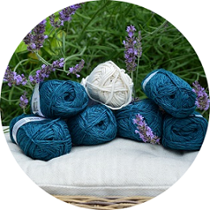

|  |
Ręcznie wydziergane 💕O mnie Zainteresowałam się projektami z włóczki trzy lata temu. Moją inspiracją był ... sweterek dla psa. Na początku wszystkie moje projekty były wykonywane szydełkiem. Po jakimś czasie zaczęłam dziergać na drutach. Zmieniłam też włóczki: z początkowej anilany przeszłam na bawełnę, alpacę, merino. |
|
|